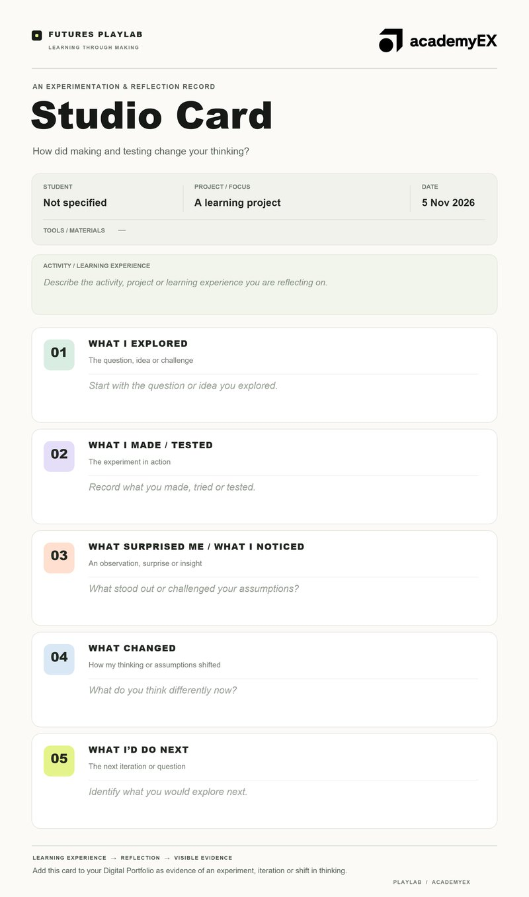

Play, then reflect
Try experimental tools right here in the page: map a system, glitch an image, trace a word or watch a colony grow. When something shifts your thinking, capture it with a Studio Card and add it to your Digital Portfolio.
Or jump straight into a tool
Open a tool and poke at it. Nothing breaks.
What surprised you? What didn't work?
Answer five questions on a Studio Card.
Export it as evidence of your learning.
The Studio Card

Make your learning visible
Use a Studio Card whenever an activity, project or experiment changes how you think. It works for any part of the programme, not just Futures PlayLab tools.
- 01What did you explore?
- 02What did you make or test?
- 03What surprised you or what did you notice?
- 04What changed?
- 05What would you do next?
In the playground
Studio Card
Capture what you explored, made, noticed and changed, then export it for your Digital Portfolio.
Playground
Experimental tools you can use right here in the page. Each one opens a different way into technological futures. Pick one and see where it takes you.
Things to try
Good to know
Then reflect
Futures PlayLab · Master of Technological Futures · academyEX